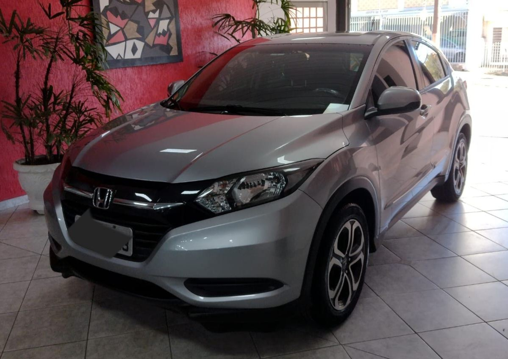
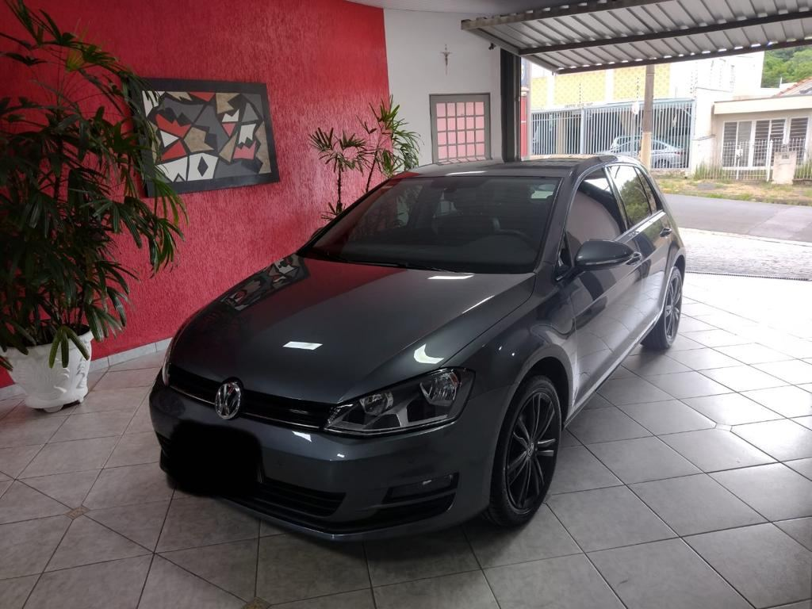
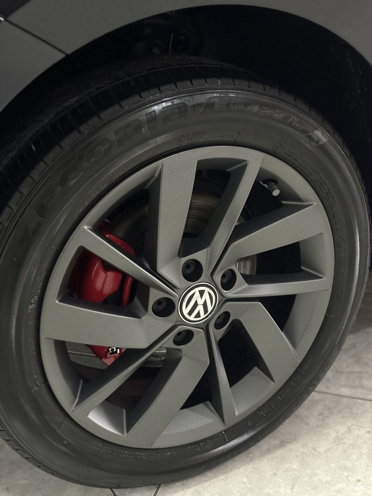
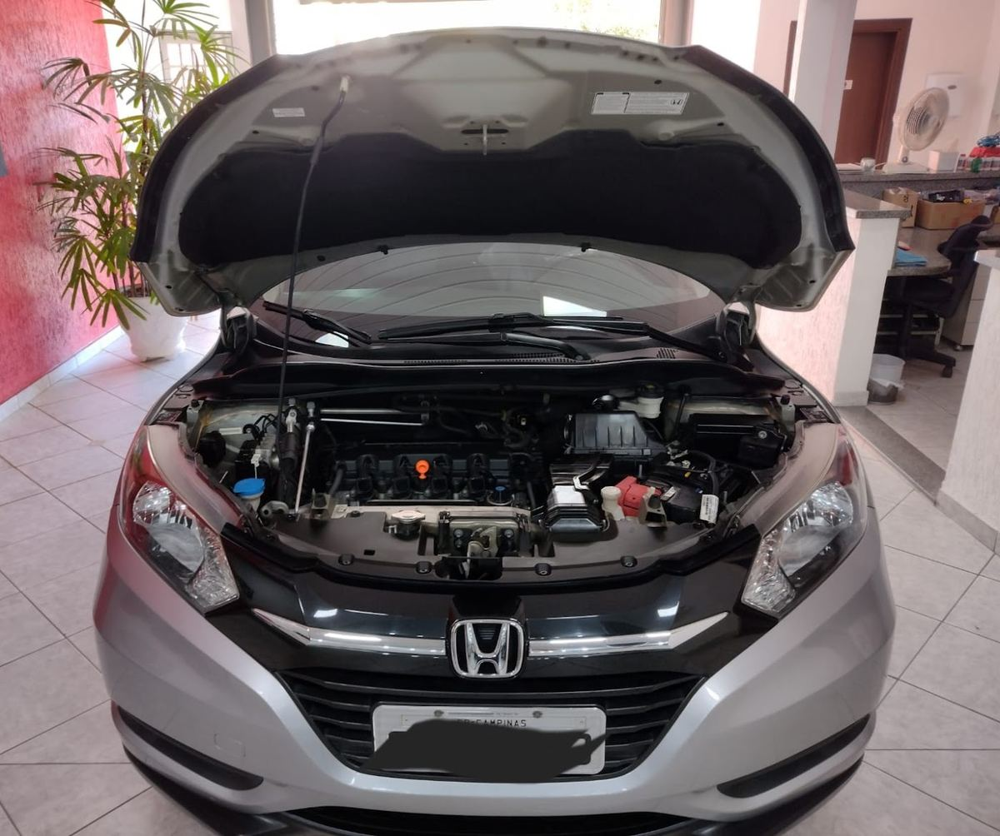
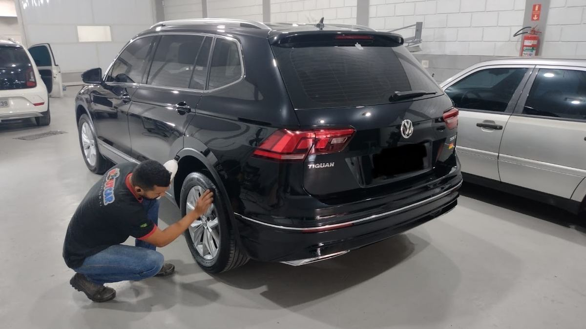
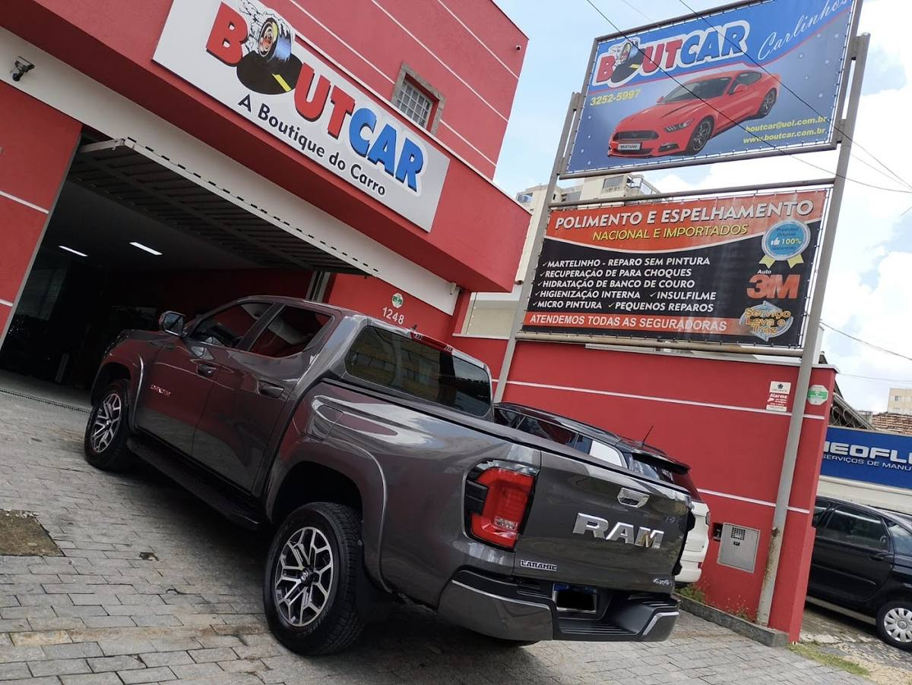

Parcela em até 10x sem juros no cartão
Seu carro sai daqui como novo.
Martelinho de ouro, micropintura, reparo de para-choque, polimento e funilaria completa, com o capricho do Carlinhos, há mais de 20 anos na profissão. Nacionais e importados. Atendemos seguradoras.
4,9 ★180 avaliações no Google
20+anos de experiência

Atendemos seguradorasnacionais e importados
Serviços
Do amassadinho à funilaria completa
Martelinho de ouroTira o amassado sem pintar, preservando a pintura original.
MicropinturaRiscos e lascas pequenas corrigidos só no ponto.
Reparo de para-choqueRecupera trincas e ralados sem trocar a peça.
Pintura automotivaDe uma peça ao carro inteiro.
FunilariaBatidas maiores, com ou sem seguro.
PolimentoDevolve o brilho e tira as marcas do dia a dia.
Cristalização 3MProteção e brilho que duram mais.
VitrificaçãoCamada protetora para a pintura.
Na loja
Carros prontos para a entrega
Oficina organizada e muito limpa: as fotos falam por si.





Orçamento por foto
Diga o que aconteceu
Marque as opções e mande pelo WhatsApp. Depois é só enviar as fotos do dano na mesma conversa.
1. O que aconteceu?
2. Onde no carro?
3. Vai pelo seguro?
4. Carro
4,9 · 180 avaliações no Google
Quem leva, recomenda
Carlinhos é excelente profissional, além de um atendimento agradável e personalizado. Serviço de alto nível, oficina organizada e muito limpa.Flavio · Google
Sou cliente há anos. Atendimento impecável e profissionais extremamente cuidadosos. Vale cada centavo.Lucas · Google
O serviço ficou ótimo, feito com muito cuidado e qualidade. Profissionais que transmitem confiança e comprometimento com o cliente.Marcilene · Google
Onde fica
No Bosque, pertinho do Centro
R. Uruguaiana, 1248 · Bosque · Campinas (SP)
Segunda a sexta, das 8h às 18h
Fixo (19) 3252-5997 · WhatsApp (19) 97419-8134